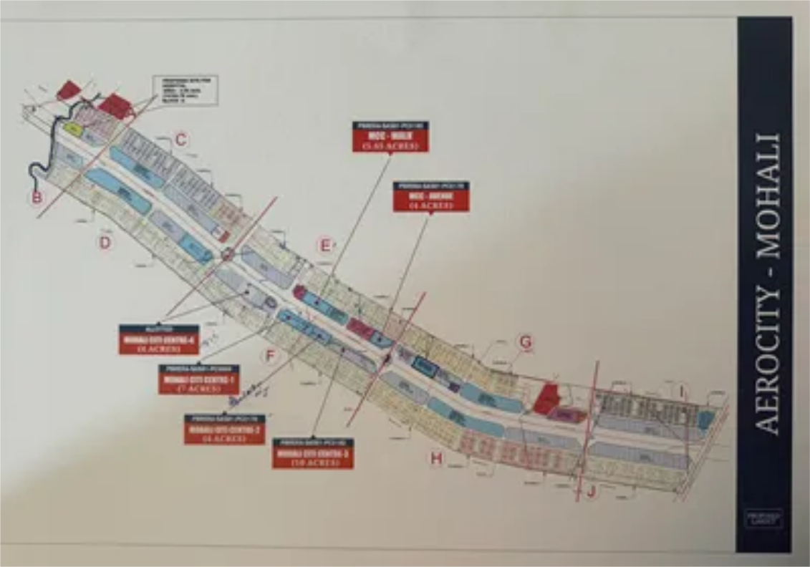

We dream of coming up with innovation, strategically designed to enhance the thriving residential hub. We seek to match up the lifestyle of the entire area,becoming a centre for social and economic growth. Our aim always revolves around one entity that is our customers.
